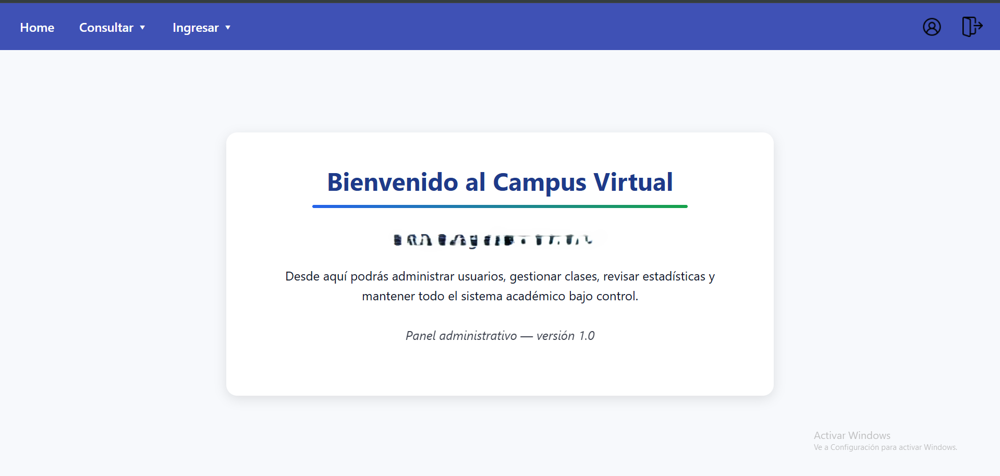

Campus Virtual - Dashboard Administrativo
Módulo de administración para manejo academico a nivel secundario

Stack & Tecnologías Utilizadas
Descripción del Proyecto
Campus Virtual es un sistema de gestión educativa diseñado para optimizar la administración académica y el control institucional a nivel secundario. La plataforma centraliza el flujo de información entre docentes, estudiantes y administradores en una interfaz ágil e intuitiva.
El sistema está construido bajo la arquitectura MVC, garantizando una separación clara entre la lógica de negocio y la interfaz. A través de peticiones asíncronas con AJAX y la integración de MySQL, ofrece filtrados en tiempo real y operaciones CRUD sin recargas de página.
Módulos y Características Clave:
- Panel Administrativo: Gestión completa de usuarios, matrículas y registros académicos.
- Búsqueda & Filtros Dinámicos: Consulta instantánea de registros y recursos.
- Diseño Adaptive & Responsive: Interfaz optimizada para cualquier tamaño de pantalla.
- Manejo de Errores: Sistema robusto que maneja errores de cualquier tipo en las entradas de datos, resistente ante las inyecciones sql y rollbacks en tablas de base de datos cuando se realizan ingresos multiples enlazados.